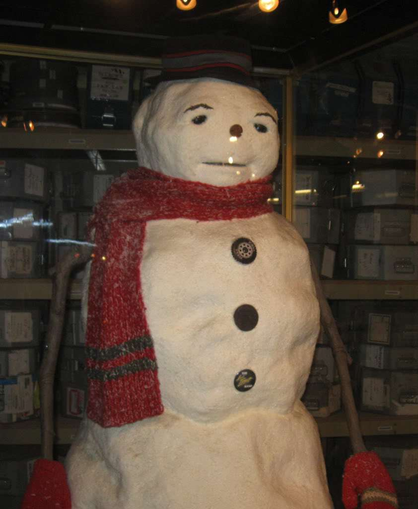

Jack Frost (1998)
Fabuła
Jack Frost jest liderem zespołu The Jack Frost Band i za wszelką cenę pragnie zostać słynnym muzykiem. Jednak praca coraz bardziej oddala go od rodziny, żony Gabby i synka Charliego. Pewnego dnia wspólnie z synem lepi bałwana i wręcza mu rzekomo magiczną harmonijkę, którą kupił w dniu jego narodzin. Obiecuje też żonie, że przyjdzie zobaczyć mecz hokejowy Charliego, ale z powodu pracy w studiu nagraniowym spóźnia się. Żeby to im wynagrodzić postanawia zabrać całą rodzinę na święta w góry, ale właśnie wtedy otrzymuje propozycję zagrania koncertu, który może odmienić jego karierę. Pomimo, że jest Wigilia, postanawia jechać, jednak po drodze uświadamia sobie, jak ważna jest dla niego rodzina. Śpiesząc do domu ulega wypadkowi, w którym ginie.
Rok później Charlie lepi ze śniegu bałwana, którego ubiera w szalik i czapkę swojego taty, a przed snem gra na harmonijce. To sprawia, że Jack powraca do życia jako śniegowy bałwan. W tej postaci usiłuje pomóc chłopcu nękanemu przez szkolnego łobuza Rory’ego oraz uczy go wartości, których mu nigdy nie przekazał za życia. Namawia go też do powrotu do szkolnej drużyny hokeja.
Film otrzymał od krytyków głównie negatywne recenzje. Roger Ebert z Chicago Sun-Times przyznał filmowi jedną gwiazdkę z czterech i powiedział, że to „ten rodzaj filmu, który sprawia, że chcesz zmierzyć sobie temperaturę, jeśli nie czujesz tętna filmowców”. Z kolei internetowy serwis Rotten Tomatoes opierając się na 49 recenzjach przyznał mu w swojej skali ocen 16%. Wyprodukowany za 85 milionów dolarów film, w pierwszy weekend wyświetlania przyniósł zaledwie siedem milionów dolarów zysku. W Stanach Zjednoczonych zarobił około 34,5 mln dolarów i stał się finansową klapą.